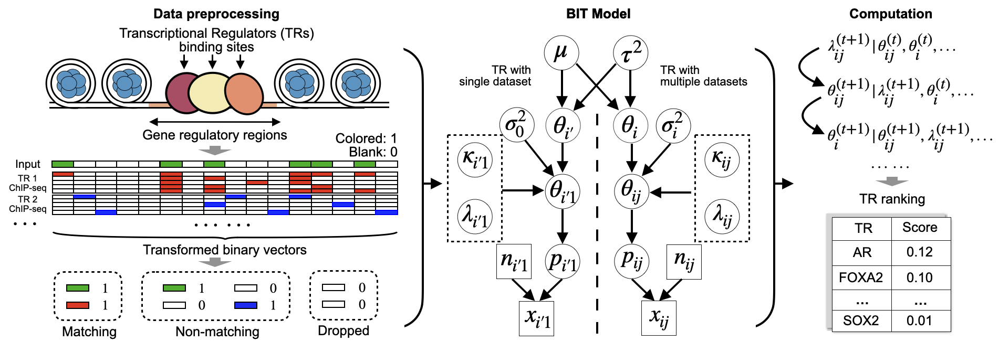

BIT - Bayesian Identification of Transcriptional regulators
The goal of BIT is to identify the transcriptional regulators that govern user defined epigenomic regions (e.g. ATAC-seq, DNase-seq, MNase-seq), the input can be either a file that stores the information of “peaks” generated by common peak-calling algorithms (e.g. MACS2) or any specific user-defined regions, such as peaks from a differential accessibility analysis (e.g. DiffBind).
If you use BIT in your work, please cite us:
Appendix